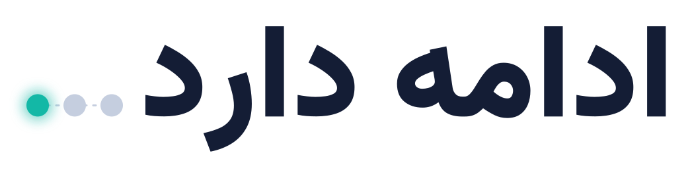

کمپین لیارا · راهنمای هویت بصری
اینترنت ممکنه قطع بشه، مسیرت نه.
۰۱ایدهی مرکزی
«ادامه دارد…» همان جملهای است که آخر هر قسمت سریال میبینیم: قصه قطع شده، اما تمام نشده. سهنقطهی پایانش هم شکل «لودینگ» و انتظار است. در هویت این کمپین، دو نقطهی اول خاموشاند (اتصالهایی که قطع شدند) و نقطهی سوم روشن و فیروزهای است: کاری که با زیرساخت لیارا ادامه پیدا میکند.
در قطعیهای اخیر، خیلی از تیمها فهمیدند مشکل فقط «سرور» نیست؛ یک npm install یا docker pull ساده هم میتواند کل کار را متوقف کند.
کار تو میتواند ادامه پیدا کند، اگر از امروز وابستگیهایش را بشناسی و روی زیرساخت داخلی آماده کنی.
صمیمی، رک، فنی و آرام. «تو» خطاب میکنیم. نمیترسانیم، آماده میکنیم. وعدهی غیرواقعی نمیدهیم.
۰۲لوگوتایپ
تایپوگرافی وزیرمتن Black، بههمراه سهنقطهی امضا. نقطهی روشن همیشه آخرین نقطه در جهت خواندن (سمت چپ) است. نسخههای SVG بهصورت منحنی (outline) هستند و به نصب فونت نیاز ندارند.

۰۳رنگها
سرمهای زمینهی اعتماد است، فیروزهای «مسیری که ادامه دارد» و هر چیزی که مخاطب باید رویش کلیک کند. کهربایی فقط برای اختلال، هشدار و نقطهی توجه. نسبت پیشنهادی: ۷۰٪ سرمهای، ۱۵٪ سفید یخی، ۱۰٪ فیروزهای، ۵٪ کهربایی.
#141D35زمینه، اعتماد، آرامش
#13B8A6مسیر پیوسته، لیارا، CTA
#F6B94Cاختلال، ریسک، تأکید
#F4F7FBمتن و فضای تنفس
#0B1224پسزمینهی ثانویه
#8A97B5متن ثانویه
۰۴تایپوگرافی
فونت اصلی وزیرمتن (لایسنس آزاد OFL) با ارقام فارسی. فونت بهصورت محلی میزبانی میشود؛ هیچ خروجی کمپین به CDN خارجی وابسته نیست. برای کد و ترمینال از فونت monospace سیستم استفاده میشود.
npm config set registry …۰۵عناصر بصری
سه موتیف تکرارشونده در همهی خروجیها: (۱) شبکهی نقطهای کمرنگ، (۲) خط گسستهی کهربایی که به خط پیوستهی فیروزهای تبدیل میشود، (۳) پنجرهی ترمینال.
npm ERR! network ETIMEDOUT
$ npm i --registry=…liara…
✓ added 312 packages
۰۶بایدها و نبایدها
بایدها
- راهکار مشخص و قابلامتحان نشان بده (مثلاً یک دستور).
- همیشه یک قدم بعدی بده: لینک، چکلیست، تست.
- نقطهی سوم را فقط فیروزهای روشن کن.
- محدودیتها را صادقانه بگو.
نبایدها
- تصویر ترسناک، آژیر یا لحن بحران.
- وعدهی «همیشه وصل» یا «۱۰۰٪ تضمینی».
- کهربایی برای دکمهی اقدام.
- فونت یا تصویر از سرورهای خارجی.